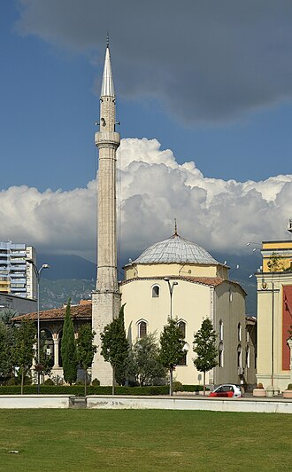

概要
La mosquée Et'hem Bey est un des monuments emblématiques de Tirana, capitale et principale agglomération de l'Albanie. Située à proximité de la place Skanderbeg, elle est caractéristique de l'architecture ottomane.
مسجد أدهم بك هو مسجد يعود إلى القرن ال18 يقع في وسط العاصمة الألبانية تيرانا. تم إغلاقه في ظل الحكم الشيوعي، المسجد أعيد فتحه كدار للعبادة في عام 1991، دون الحصول على إذن من السلطات.
The Et'hem Bey Mosque, officially the Haji Et'hem Bey Mosque, is a Sunni mosque located in Tirana, Albania. The mosque is well known for its frescoes outside and inside the portico which depict trees, waterfalls and bridges.
Hacı Edhem Bey Camii, Osmanlı Devleti zamanında, bugünkü Arnavutluk Cumhuriyetinin başkenti Tiran'da inşa edilen cami. 1791 yılında Hacı Edhem Bey ve babası Petrelalı Molla Bey tarafından inşa edilmiştir.
Masjid Et'hem Bey adalah sebuah masjid di Tirana, Albania. Masjid ini ditutup di bawah pemerintahan rezim komunis Albania, masjid dibuka kembali sebagai rumah ibadah pada tahun 1991. Tanpa izin dari pihak berwenang, 10.000 orang hadir dan polisi tidak ikut campur. Lukisan dinding di luar dan di serambi menggambarkan pohon, air terjun dan jembatan - motif yang jarang terlihat dalam seni Islam.
ادھم بے البانیا کے دار الحکومت تیرانا کے مرکز میں واقع ایک مسجد ہے۔ اس مسجد کی تعمیر کا آغاز 1789ء میں ملا بے نے کیا اور اس کی تکمیل سلیمان پاشا کے پوتے حاجی ادھم بے کے ہاتھوں 1823ء میں ہوئی۔ البانیہ میں اشتراکی دور میں یہ مسجد بند کر دی گئی اور طویل بندش کے بعد 18 جنوری 1991ء کو اسے کھول دیا گیا۔ مسجد کے دوبارہ کھولے جانے پر اشتراکی حکام کی شدید مخالفت کے باوجود دس ہزار افراد پرچم ہاتھوں میں لیے مسجد پہنچے اور یہ واقعہ البانیہ میں اشتراکیت کے زوال کا نقطہ آغاز ثابت ہوا۔ اس مسجد میں کی خاص بات اس میں کیا گیا مصوری کا کام ہے جس میں نباتات، آبشاروں اور پلوں وغیرہ کی تصاویر بنائی گئی ہیں جو اسلامی فن تعمیر میں کہیں نہیں دیکھا گیا۔ مسجد سیاحت کے لیے تو ہر وقت کھلی رہتی ہے تاہم اس کے اندر نماز ادا نہیں کی جاتی۔
Die Et’hem-Bey-Moschee ist ein osmanischer Sakralbau. Die Moschee befindet sich im Zentrum der albanischen Hauptstadt Tirana am später angelegten Skanderbeg-Platz.
La Mezquita Et'hem Bey se encuentra situada en el centro de Tirana, capital de Albania.
La moschea Et'hem Bey è una moschea ottomana di Tirana, capitale dell'Albania.
De Et'hem Bey-moskee is een moskee aan het Skanderbegplein in het centrum van de Albanese hoofdstad Tirana.
Мечеть Этхем Бей — мечеть расположена в центре албанской столицы Тираны. Строительство было начато в 1789 году Молла Бейем, и было закончено в 1823 его сыном Нахчи Этхем Бейем, правнуком Паши Сулеймана. Название мечети на албанском содержит апостроф, разделяющий буквы t и h, так чтобы они не считались диграфом. Албанский алфавит содержит диграфы, и изредка случается, что пары букв, обычно составляющие диграф, соответствуют раздельным звукам. Для уточнения чтения в албанских топонимах неофициально употребляется апостроф. В русском языке встречаются разные варианты названия мечети, например, Этем-бей или Эфем-бей, однако правильным вариантом с учетом раздельного произношения букв, будет Этхем-бей.
地図上の位置
資料とリンク
- Wikipédia — Français
- Wikipédia — العربية
- Wikipédia — English
- Wikipédia — Türkçe
- Wikipédia — Bahasa Indonesia
- Wikipédia — اردو
- Wikipédia — Deutsch
- Wikipédia — Español
- Wikipédia — Italiano
- Wikipédia — Nederlands
- Wikipédia — 日本語
- Wikipédia — Русский
- Wikidata — Q798610
データ：ウィキデータ（CC0）、3か月ごとに更新。年は、その建物について知られている最も古い建設年です。のちにモスクになった建物（アヤソフィアなど）の場合は、元の建物の建設年です。写真：ウィキメディア・コモンズ。作者とライセンスは各写真のページにあります。